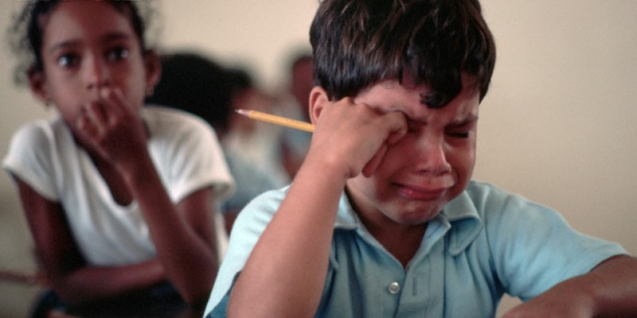

Be sure to read the latest press release on our exciting new CRAP. If you think you're in the wrong place, just head over here, where you'll definitely be in the wrong place.
AP Today
AP courses are offered to High School students and despotic parents who are fascinated by regurgitating shallow outlines of advanced material for the sole purpose of building their college applications. Through these courses, we strive to promote our arbitrarily selected subject matter and provide students with an experience that has as little to do with college as academically possible. This way, they can be minimally prepared to follow up the classes they usually won't be allowed to place out of anyway.
The AP program is incredibly valuable to students because it helps develop skills such as memorization of largely disconnected information, which they will find useful in situations without access to a computer, a phone, any books, or other humans, much like in an insane asylum. It can also help accustom them to nearly cryptographically random grading systems, extremely strong curves, and scoring scales that have been reduced to minimize any actual meaning.

But the drawbacks don't stop there. AP tests are also beneficial to schools, which have begun forcing students into taking unreasonable numbers of tests in order to garner positive attention from mainstream media for pushing challenging curriculum. This systematic, self-perpetuating silliness has truly taken wing throughout schooling on an international level, and even we're quite proud of what we've caused.
Ultimately, standardized testing also improves our bottom line as a company, which is beneficial to everyone because we get more money. But if you thought we'd be satisfied at that, you'd be wrong as CRAP.
Introducing CRAP
In order to extend our mafia-like influence even further, we're introducing a new series of standardized tests aimed at allowing students in preschool, elementary school, and middle school to place out of courses at the next scholastic level. This will be part of our re-envisioned program, named pre-Collegiate Restrictionless Advanced Placement.
Personalizing Education
Students, especially in preschool and K-5, need to define themselves to colleges. They need to put their names on the candidate list, and to do that, they need to be able to customize their education. We firmly believe that students will always make the best decisions for themselves, so we want to give them the full spectrum of opportunities, even if most of them are bad. Our new program puts education in the hands of the students, regardless of their grade, and we're proud to be progressing academics in such a backwards-thinking way. Today, we're giving you a sneak preview of some of the new courses we're offering.
▸ Prekindergarten
Advanced Coloring We believe every student is an aspiring artist, and with the proper
training, can make works rivalling those of Picasso and Monet. In advanced coloring, we want to
teach students the formula for being original and creative.
Basic Grammar Grammar is a subject as old as the classroom. We intend to
revolutionize the English learning process for Kindergarten students, who will sentence structure
and 2017 SAT vocabulary, which we've reduced to a more accessible set consisting of all 2-3 letter
words in the English Language.
Alphabetics Did you know there are over 34 ways to pronounce the letter Q? No matter
how you look at it, there are a lot of letters in English.
This course will deeply familiarize students with the numerous symbols in the alphabet, as well as
give them advanced insights into how they can be used.
Advanced Napping Napping is a lifelong skill. We're offering this class to make sure
all students have the opportunity to take naps. It's also a good way for them to get an early
start catching up on
sleep they'll miss in higher grades.
▸ Kindergarten
Arithmetic Arithmetic is obviously an important skill both in and outside of the
classroom, and we want to make sure students have as solid a foundation in the subject as possible.
According to our meticulous study plan, students will have only gotten to integral calculus by the end of the year.
Reading What better time to start into the classics than now, when students are most curious and impressionable?
Not only will this course standardize how students interpret literature, it will also make sure they're exposed to a tailored list of classics,
including The Canterbury Tales, One Hundred Years of Solitude, Being in Time, and Atlas Shrugged.
Seminar in Play Time Structured playtime is the best way to produce a child prodigy,
which your child undoubtedly is. In this seminar, students will keep documented logs of their social
interactions during off hours in order to demonstrate to colleges that they are socially adept and confident.
Seminar in Recess Seminar in recess is the perfect way for students to complete their
kindergarten portfolio. It's a holistic approach to testing a combination of social awareness, physical
fitness, and several other factors, but nobody seems to actually know what it is.
▸ Elementary School
Cursive Cursive is probably the most useful skill students will ever acquire, and they'll
find themselves in countless situations where it's applicable to their careers.
Much like writing five paragraph essays, doing long division by hand, and counting the tiles in the ceiling,
this is a life skill.
Arithmetic Here at CollegeBoard, we've never heard of computers or calculators, so
we think it's a good idea to test students on doing math by hand. Like most others, we grade this
exam primarily with a random number generator, so practice hard, but don't expect much.
Recorder It's been used in symphonies by the likes Bach and Mozart. It's played battle marches
and national anthems. Some say it's the instrument that welcomes you at heaven's gate. The recorder
is one of the most beautiful instruments known to man, and through this curriculum, we hope to torture
every single teacher into questioning their very existence.
Seminar in First Crushes Middle school is an emotionally challenging time for students.
To help elucidate life's mysteries, we're presenting a brand new course on dating in elementary school,
which includes lessons on awkwardly asking girls out and not being sure what a date is.
▸ Middle School
Social Dynamics Spending tens of hours studying alone in your room is the perfect way
to learn the material for this new test, which encompasses things like make eye contact while conversing,
common etiquette, and an advanced unit on reading the mood.
Second Crush Since now is around the time when students start to have their second
or third crushes, we thought it'd be the perfect opportunity to give them an opportunity to also
demonstrate what they've learned. Which, around now, is usually not very much, especially in the way of
romance.
Being Annoying Being annoying is the quintessential middle
school activity, so we want students to be able to demonstrate their talents and hopefully
place out of corresponding courses in high school, college, and the rest of life.
CRAP In Action
The CRAP program will be rolling out in early 2018, and will be available to students of all grade
levels. We hope to see monumental turnout this year, so if you are a parent, enroll your children
now, and if you're a student, click the button below to begin the signup process. Make sure you
also stay tuned for our upcoming trimester exams, which will give you an accurate index of the
intelligence of your baby in the womb!
Do a satisfaction survey for a score boost on your next standardized test!
Reminder
Make sure to study for any upcoming tests. Higher scores means more people take our tests!
Reminder
All students have the ability to achieve highly good greatness and holistic attitudes towards
admissions. We want to help students so one day in a dream in career make money make money make
money make money error 12204 from BSGenerator instance: conflicting
semantic premises.
See which executives are embezzling the most money...